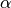

MatrixExponential¶
About the MatrixExponential functions¶
The WaveBlocks Project
@author: R. Bourquin @copyright: Copyright (C) 2010, 2011, 2012, 2013, 2014 R. Bourquin @license: Modified BSD License
Class documentation¶
The WaveBlocks Project
This file contains several different algorithms to compute the matrix exponential. Currently we have an exponential based on Pade approximations and an Arnoldi iteration method.
@author: R. Bourquin @copyright: Copyright (C) 2007 V. Gradinaru @copyright: Copyright (C) 2010, 2011, 2012, 2015 R. Bourquin @license: Modified BSD License
- MatrixExponential.arnoldi(A, v0, k)[source]¶
Arnoldi algorithm to compute the Krylov approximation
 of a matrix .
of a matrix .Parameters: - A – The matrix of shape
 to approximate.
to approximate. - v0 – The initial vector of length
 .
. - k – The number
 of Krylov steps performed.
of Krylov steps performed.
Returns: A tuple where
 is the large matrix of shape
containing the orthogonal vectors and is the
small matrix of shape containing the Krylov approximation
of .
is the large matrix of shape
containing the orthogonal vectors and is the
small matrix of shape containing the Krylov approximation
of .- A – The matrix of shape
- MatrixExponential.matrix_exp_arnoldi(A, v, factor, k)[source]¶
Compute the solution of via
steps of a the Arnoldi krylov method.Parameters: - A – The matrix of shape .
- v – The vector of length .
- factor – An additional scalar factor .
- k – The number of Krylov steps performed.
Returns: The (approximate) value of .
- A – The matrix of shape